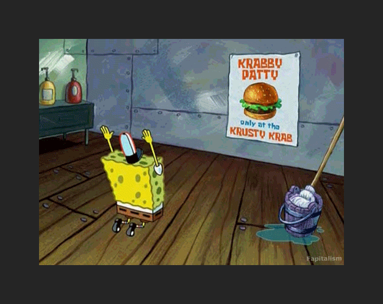

In the teenage years, young people begin their quests for identity. The following are ways in which young people go about this quest:
Through status symbols.
Adolescents try to establish themselves through prestige — wearing the right clothes, having the right possessions, from makeup to
sunglasses. These posessions help to form teen identities by expressing affiliation with specific groups.
Through forbidden activities.
Teens often feel that appearing mature will bring recognition and acceptance. They begin engaging in practices they associate with adulthood,
such as smoking, drinkingand drugs.
Through rebellion.
Rebellion demonstrates separation. Teens can show that they differentiate themselves from parents and authority figures, while maintaining the
acceptance of their peers.
Through idols.

Celebrities may become “rolemodels” for teens who are looking for a way of experimenting with different roles. They may identify with a known figure,
trying to become like that person, and in effect, losing hold of their own identities. This identification with a well known personality gives teens
a sense of belonging.
Through cliquish exclusion.
Teens often can be intolerant in their exclusion of their peers. Since they are constantly trying to define and redefine themselves in relation
to others, they do not want to be associated with anyone having unacceptable or unattractive characteristics. They try to strengthen
their own identities by excluding those who are not like themselves.